指尖携带的遗传密码 · 揭示与生俱来的天赋图谱
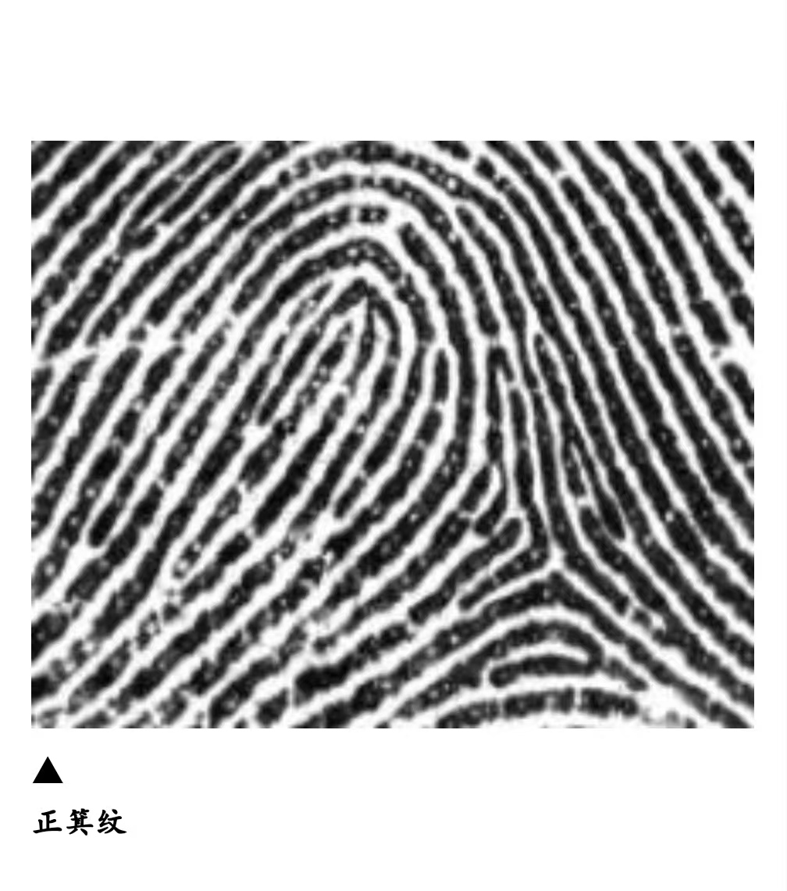
常见 · 箕形纹
开口朝小指方向
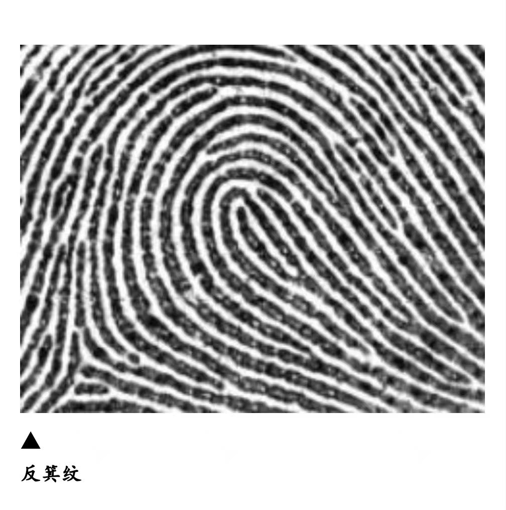
少见 · 反箕
开口朝拇指方向 ←
掌心朝上，看纹路"开口"方向。如果开口靠近大拇指那侧——就是反箕。可以有多个手指都是反箕。
10 个手指里，有没有"开口朝大拇指"的纹路？
点击图片可放大对照：
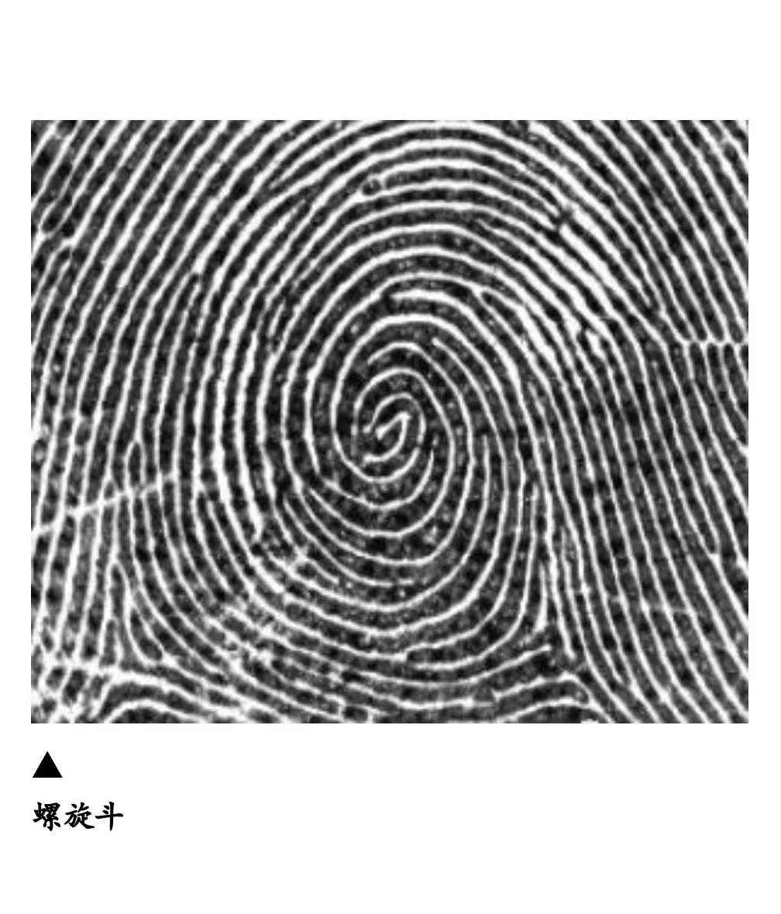
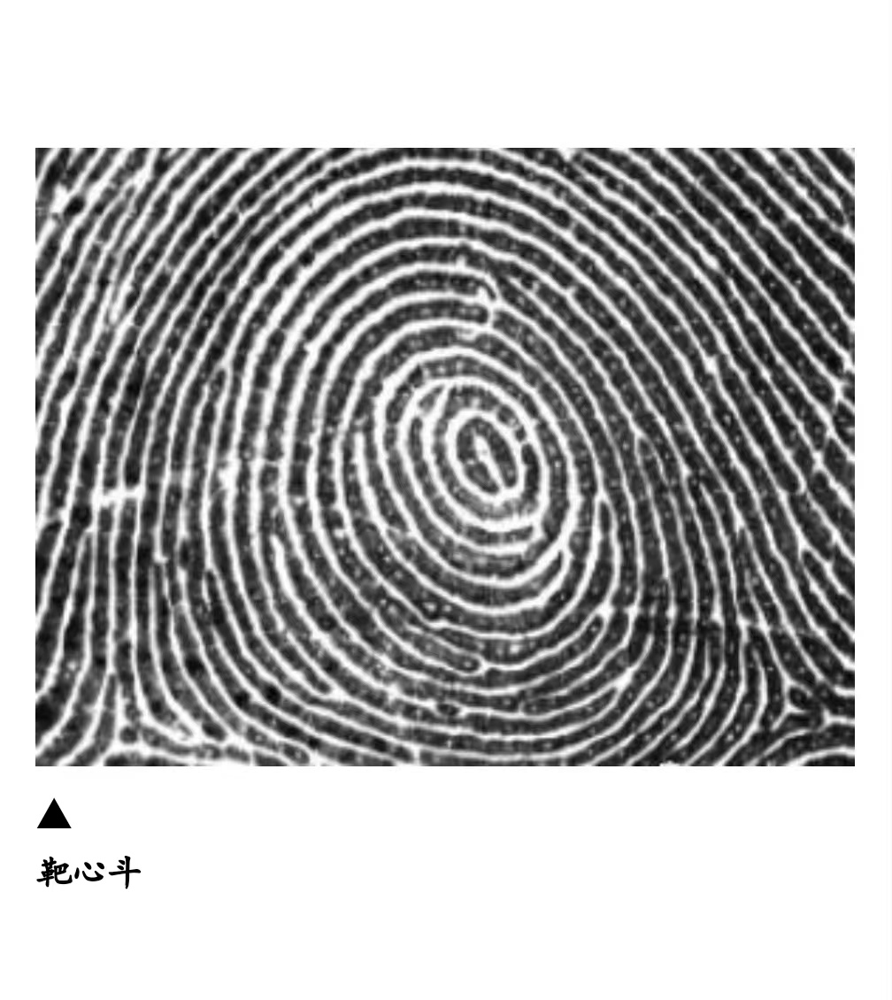
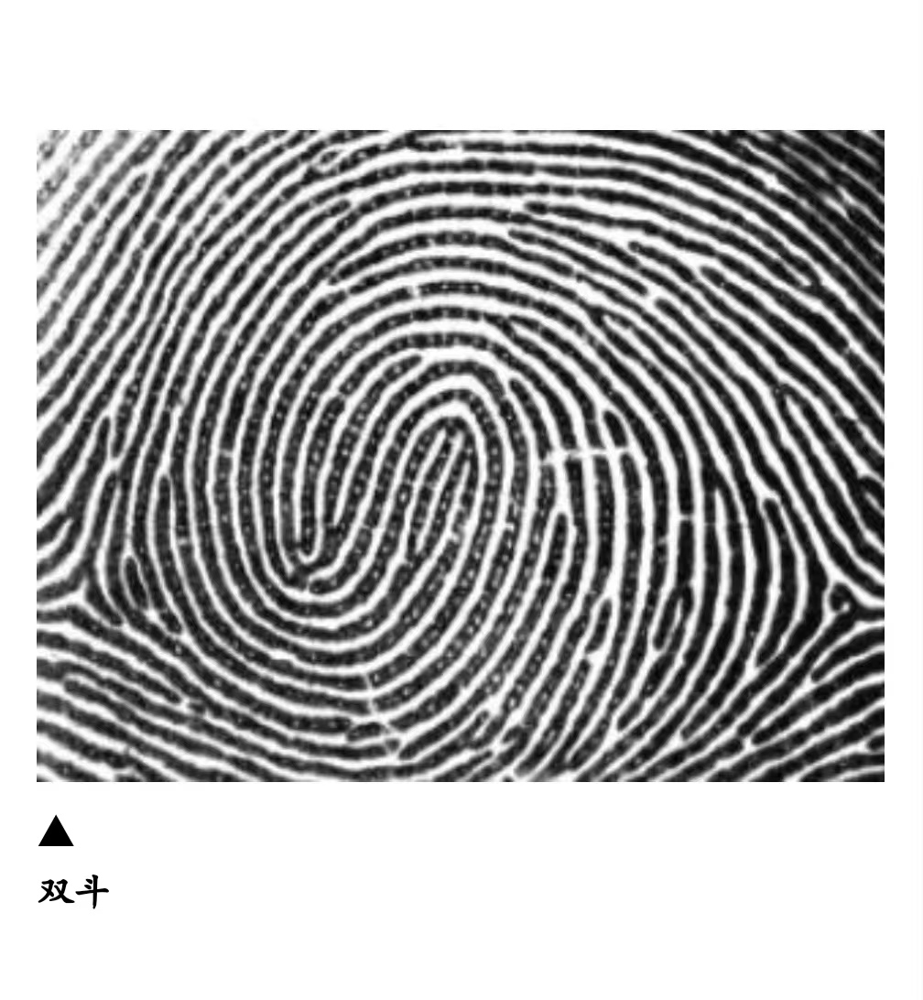
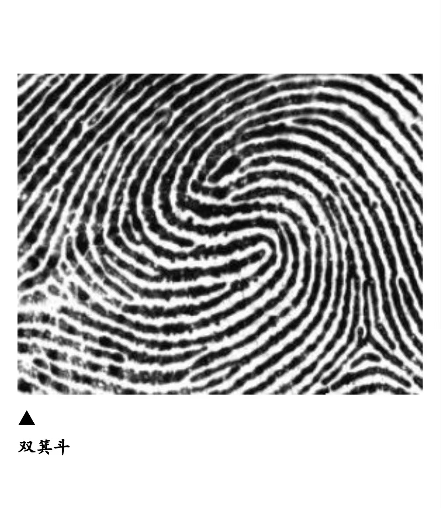
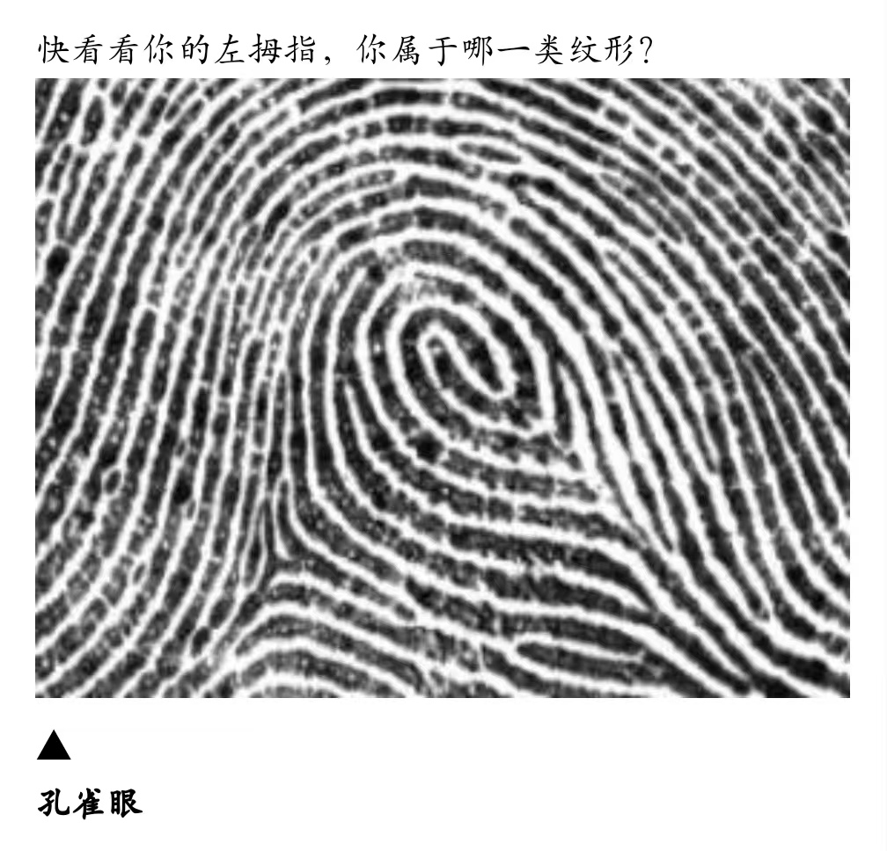
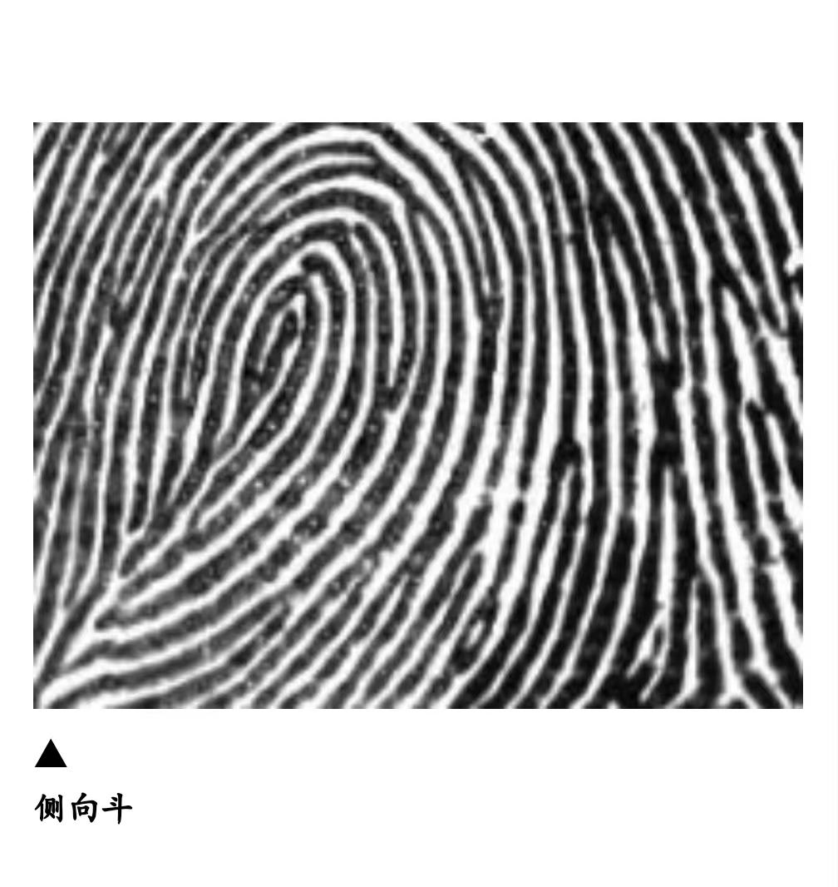
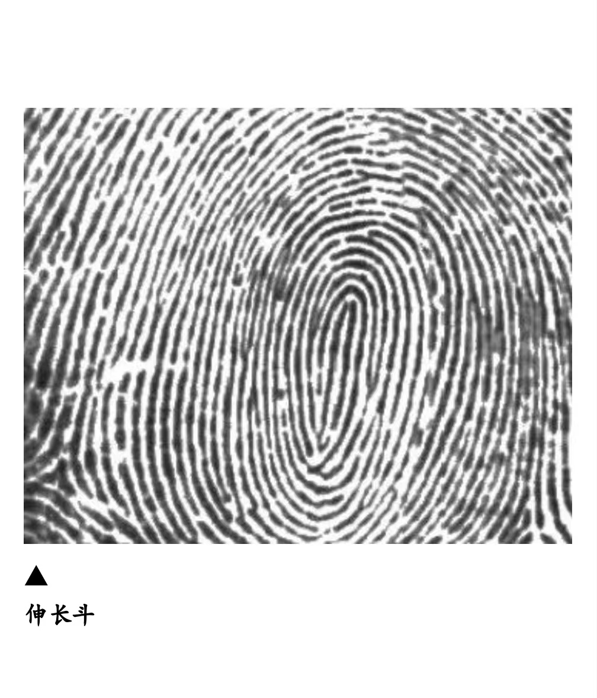
把手指立起来看纹路中心：如果像漩涡、同心圆，或有两个中心点——就是斗形纹（W）。先记住它们的样子。
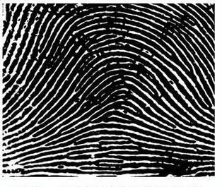
简单弧（X）
小山丘，无三叉点
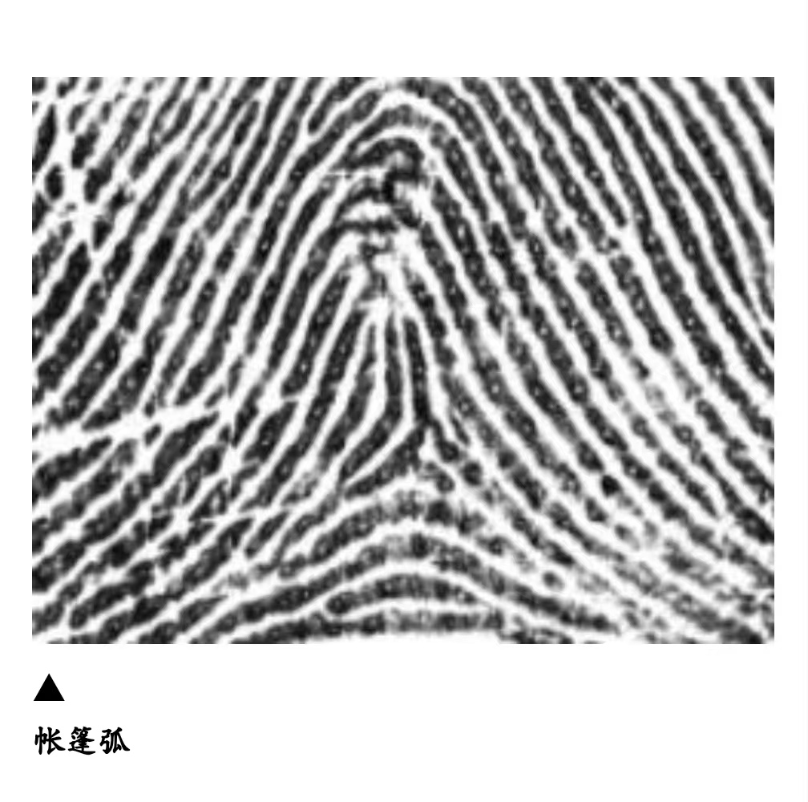
帐篷弧（Xn）
下一步再选这个 →
哪些手指是"小山丘"简单弧？
可多选；没有的话直接点"没有"
和简单弧类似，但中间有一条像帐篷支柱的纹直冲上方。注意区分这两种弧形纹。
哪些手指是帐篷弧？
灰色手指已选过简单弧，不能重复选
纹路像簸箕，开口朝向小指方向。是概率最高的纹型，大多数手指都会有。
哪些手指是箕形纹？
灰色手指已在前面步骤中选过，不能重复
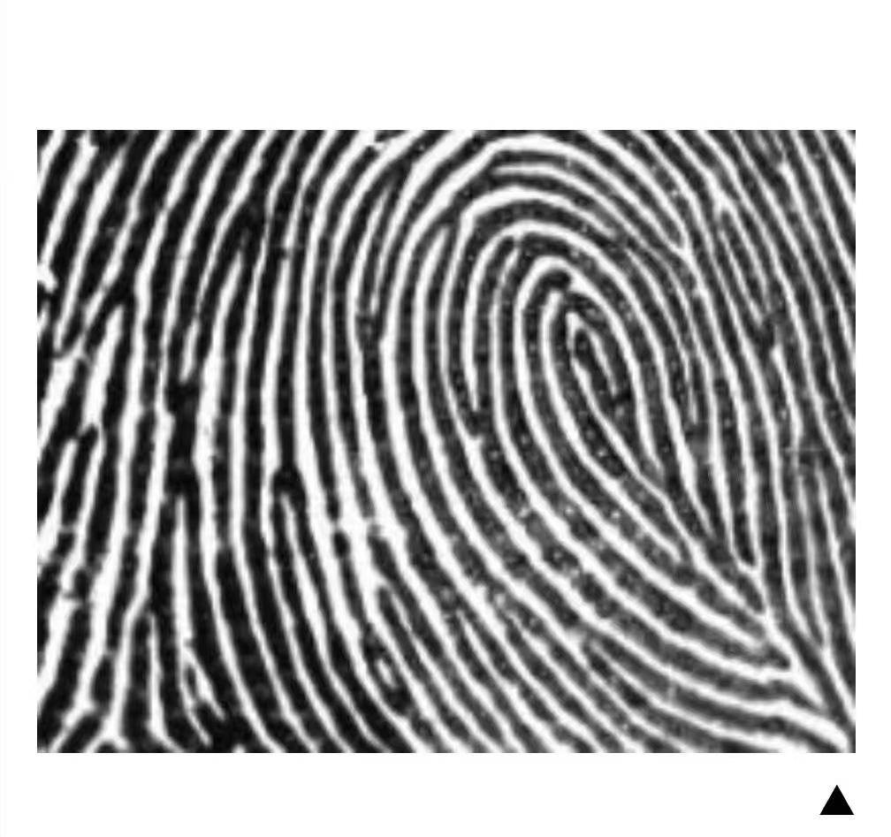
点击图片放大对照：
生成中…